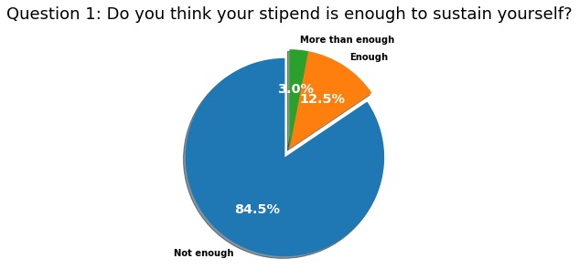
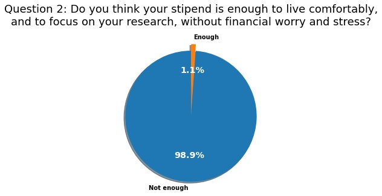

Statement From SBU GSEU on Graduate Student Wages

What is it like to be a graduate student in Stony Brook University? This is what we tried to find out in our recent survey on financial evaluation, which so far received 266 responses. We already knew that out of 63 AAU universities, Stony Brook ranks 57 in terms of the ratio of our net stipend to cost of living. Our findings portray with indubitable clarity the dismal life filled with anxiety and stress resulting from our financial struggles. (Read the full letter here)

The numbers speak for themselves. We asked graduate workers if their stipend is enough to sustain themselves, 85% answered no. We asked them if their stipend is enough to “live comfortably, and to focus on your research, without financial worry and stress,” 99% said no. To the question in which we asked if they have encountered financial problems during their time in Stony Brook, 79% of graduate workers answered yes and 12% answered maybe, leaving only 9% who have not encountered financial problems during their time at Stony Brook. When we asked students if their financial problems impacted their research or teaching, 68% said yes and 18% said maybe, which leaves only 14% whose research and teaching has not been impacted by their finances. Another question we asked was if graduate workers’ mental health has been impacted by financial problems. 71% answered yes, 17% answered maybe, which means only 12% of Stony Brook graduate workers did not have mental health problems resulting from financial causes. Finally, how did Stony Brook graduate workers compare Stony Brook’s base stipend to what they think is a living wage? 99.6% said our base stipend is below living wage, 90% of the respondents to this question said our stipend is “very low” compared to a living wage.
As striking as these numbers are, they carry with them a world of stories that express the tragic situations Stony Brook graduate workers live in. Many graduate students live paycheck to paycheck, leaving us with great anxiety over bills, rent, groceries, and possible emergency expenses that could bankrupt us. This anxiety pushes graduate workers to get second or third jobs, damaging our research and ability to teach. Graduate students live in unsafe or abusive homes because they cannot afford to move and get apartments by themselves. Some of us cannot afford to see our families, while others cannot afford to start one. Getting by with wages below living wage hurts our bodies by forcing us to choose unhealthy food because eating healthy means not being able to pay rent. Our wages leave us to choose between basic car maintenance or groceries, which endangers our lives. Our financial struggles turn our disciplines that we love into an exploitative reality, a source of so much financial misery and unhappiness that some of us consider leaving. We cannot afford a healthy diet, a safe and comfortable accommodation, ability to engage in normal social activities, and to live without mental health problems: in short, we cannot afford to live in a way deserving of a human being.
Luckily I have a very understanding landlord, but I'm constantly late on rent. I have taken second and third jobs to make ends meet, which detracts from my graduate work. I have no savings, nor any expendable income, and live paycheck-to-paycheck.
I currently live in a four bedroom house with four other people; I share a room with one of them. We really couldn't afford to have only four people splitting the rent here so we have a too full house with a very crowded kitchen. My partner and I would love to move out into a one bedroom somewhere, but we just couldn't make the rent. We briefly considered buying a house, because the mortgage payments would be cheaper than most rent and at least you own the house eventually, but we would never have been able to make a decent down payment and still be OK.
The constant looming cloud of having a very strict budget to pay my bills and the knowledge of not having enough in an emergency has had a negative impact on my mental health and has prevented me from focusing completely on my research and duties.
To our fellow graduate workers we say: you are not alone in financial and mental health struggles. You deserve to live a comfortable and happy life where you can follow your passions in research and teaching. Your financial struggles are not your fault and the life that your stipend confines you certainly does not express your value, ability, or merit as a graduate worker or a human being.
We ask our faculty: do you want to see a university where all our programs flourish, where graduate workers produce the best research they can and our students receive the best quality of education possible? Do you want to see all graduate students live a happy and fulfilled life where they can realize their utmost potential? If so, we invite you to support our efforts for a living wage. Anxious, hungry, worried and financially struggling graduate workers do not make good researchers or educators. The advancement of all our programs lie in improving the conditions of graduate workers.
Lastly, we call on to President McInnis: you have professional, moral and personal responsibilities to ensure a living wage for graduate workers.
We say professional responsibility because the current conditions of graduate workers betray the mission statement of Stony Brook University. The mission statement of the university includes providing highest quality education and research. We make the necessary repetition: anxious, hungry, worried and financially struggling graduate workers do not make good researchers or educators.
We say moral responsibility, because as the president of our university, you have the power to end human suffering, relieve immense stress, worry and anxiety, and give comfort and happiness to thousands of graduate workers. We call on you to alleviate the issues graduate workers face, only a miniscule part of which we described above.
We say personal responsibility because you have conveyed in various statements your care for graduate students’ lives and financial issues. In the announcement of the new Presidential Dissertation Completion & Extension Awards, you said that “[a]t Stony Brook, we value supporting our doctoral students.” We appreciate this sentiment. However, the overwhelming majority of graduate workers think the support they have received from the administration is insufficient. We asked in our survey whether the respondents think the new presidential awards are enough to solve graduate student financial hardship. 97.4% answered no. When we asked graduate workers if they support our living wage campaign 100% answered yes. Graduate workers have spoken and shown you the way they want their life to be improved: they want a living wage.
What is the living wage we are demanding? This was another question we asked graduate workers in our survey. We provided